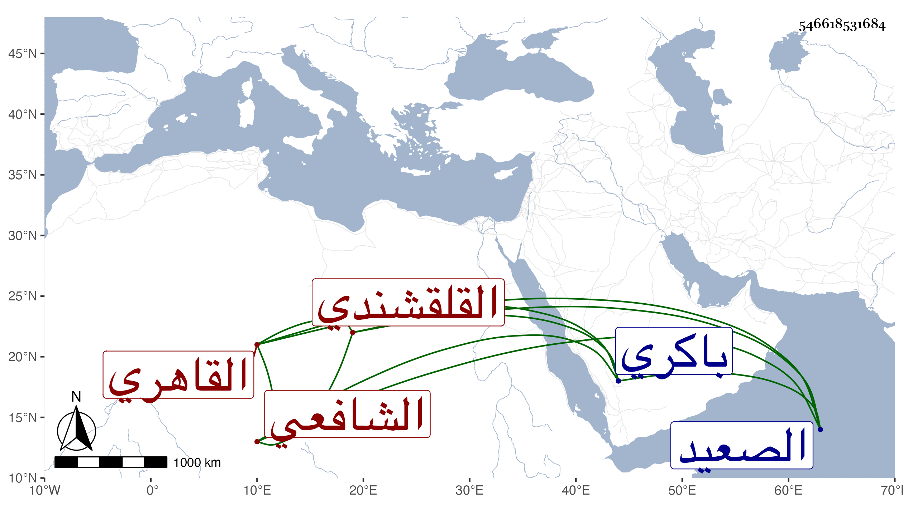

0902Sakhawi.DawLamic.ITO20230111-ara1.EIS1600.546618531684
Biography ID: 546618531684
327
محمد بن إسماعيل بن أحمد بن إسماعيل بن محمد بن إسماعيل بن علي البدر القلقشندي الأصل القاهري الشافعي الماضي أبوه . ولد سنة أربع وثلاثين وثمانمائة ونشأ فسمع على شيخنا وغيره كالجمال بن جماعة ونشوان وتكسب بالشهادة ثم ناب ببعض بلاد الصعيد عن الأسيوطي وحج غير مرة وجاور مرارا وكان يشهد هناك أيضا . مات بعد أن كسر ذراعه ببركة الحاج في توجهه وهو راجع في ليلة الأحد سادس المحرم سنة تسعين بالحنك ودفن باكري ولم يكن مرضيا وقد أحضر الى ولدا له عرض على كتبا وكان شريك إبراهيم ابن عمه العلاء في ميراث عمهما التقي عبد الرحمن وتزوج هو بزوجته خالة إبراهيم ومات معها رحمهم الله .
